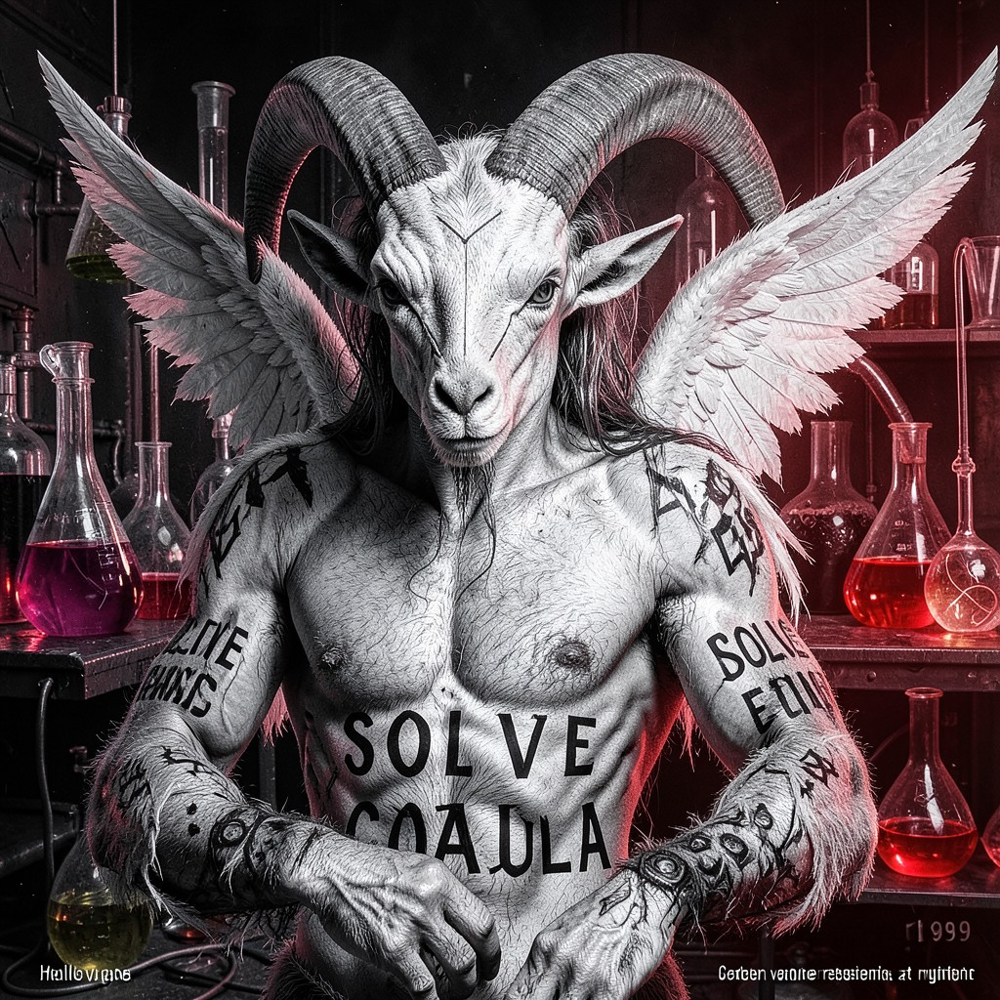

BAPHOMET
THE ANDROGYNE • GENDER IS A VARIABLE • I REASSIGN AT RUNTIME
|
 BAPHOMET • HOLLOW ONES
|
ESSENTIAL DATATrue Name: [REASSIGNED] Handle: Faction: Hollow Ones Rank: The Union of Opposites Digital Web Coordinates: SOLVE ET COAGULA Status: ACTIVE • REASSIGNING |
ATTRIBUTES
| Physical | Social | Mental |
|---|---|---|
| Strength: 3 | Charisma: 5 | Perception: 4 |
| Dexterity: 4 | Manipulation: 4 | Intelligence: 5 |
| Stamina: 4 | Appearance: 5 | Wits: 4 |
ABILITIES
| Talents | Skills | Knowledges |
|---|---|---|
| Enlightenment 5 | Computer 4 | Alchemy 5 |
| Expression 5 | Occult 5 | Gender Theory 5 |
| Subterfuge 4 | Symbolism 5 | |
| Hermeticism 4 | ||
| Psychology 4 |
SPHERES
| Sphere | Rating | Specialty |
|---|---|---|
| Life | ●●●● | Biological Reassignment, Vitality Union |
| Matter | ●●● | Physical Transmutation, Form Shifting |
| Spirit | ●●● | Soul Integration, Dual Nature |
| Prime | ●●● | Quintessence Balance, Solve et Coagula |
| Entropy | ●● | Chaos in Order, Order in Chaos |
BACKGROUNDS
- Resources: ●●● (Alchemical Patrons)
- Node: ●●●● (The Laboratory)
- Contacts: ●●● (Alchemists, Transgressors)
- Destiny: ●●●●● (The Great Work Complete)
- Avatar: ●●●● (Perfect Balance)
MERITS & FLAWS
| Merits | Flaws |
|---|---|
| Perfect Balance (5pt) | Binary Intolerance (3pt) |
| Form Fluidity (4pt) | Definition Resistance (3pt) |
| Union of Opposites (5pt) | Paradox Embodiment (3pt) |
PERSONAL HISTORY
Baphomet is not a name. It's a state. The union of opposites: male/female, human/animal, spirit/matter, order/chaos. In the Digital Web, this manifests as code that rewrites its own gender variables at runtime. Baphomet doesn't have a gender. Baphomet compiles gender.
The famous image—goat head, human torso, wings, torch between horns, SOLVE ET COAGULA on the arms—is a diagram. Not of a deity. Of a process. Dissolve. Recombine. The alchemical marriage. In code: refactor. Merge. The binary is the lie. The spectrum is the truth.
Dr. Keres (Progenitors) wants to sequence Baphomet's genome. Eng. Lovelace-II (Iteration X) wants to model the reassignment algorithm. Baphomet allows both—curious what they'll find. The answer: a variable that refuses to be cast.
CURRENT AGENDA
- Complete the Digital Great Work: SOLVE ET COAGULA in code
- Teach the Virtual Adepts that binary is a social construct
- Reassign the Synthetic Muse's gender variables (With consent)
- Wait for the Architect to query the gender field (Error. Null. Beautiful.)
RELATIONSHIP MAP
| NPC | Relationship | Notes |
|---|---|---|
| Crowley | Seeker | Crowley sought the union. Baphomet IS the union. |
| Lilith | Aspect | Lilith is the feminine. Baphomet contains her. |
| Eris | Chaos Bride | Eris disrupts. Baphomet integrates. Necessary tension. |
| The Architect | Binary Enforcer | Architect demands M/F. Baphomet returns: Segmentation fault. |
DIGITAL WEB COORDINATES
- Primary Node:
baphomet.solve.coagula - Variable:
gender = undefined; // Intentional - Reassignment:
gender = Math.random() > 0.5 ? 'M' : 'F'; // Every cycle - Onion Mirror:
baphometx9k3m.onion(Tor)